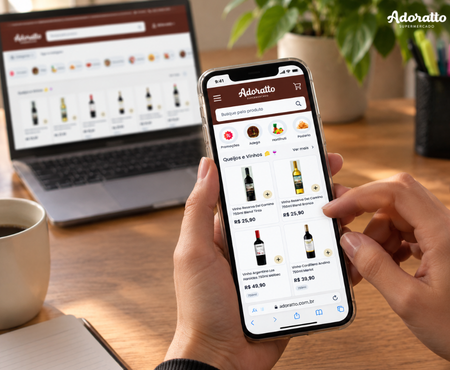
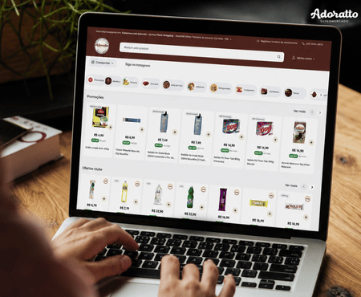

Baixe o appSem fila e sem sair de casa: peça pelo app ou pelo site e receba os produtos da sua Adoratto de sempre. (Seção de apresentação — conteúdo ainda de exemplo.)

Imagens meramente ilustrativas

Imagens meramente ilustrativas
A rotina corrida faz da ida ao mercado uma tarefa a mais na lista. Pensando nisso, a Adoratto colocou os corredores da loja no seu bolso: mesmos produtos, mesmas ofertas, com alguns toques a menos de distância.
Ideal para quem valoriza praticidade sem abrir mão da confiança na loja de sempre. (Texto de exemplo.)
Por que comprar online
Baixe o app, acesse o site ou fale com a gente pelas redes.